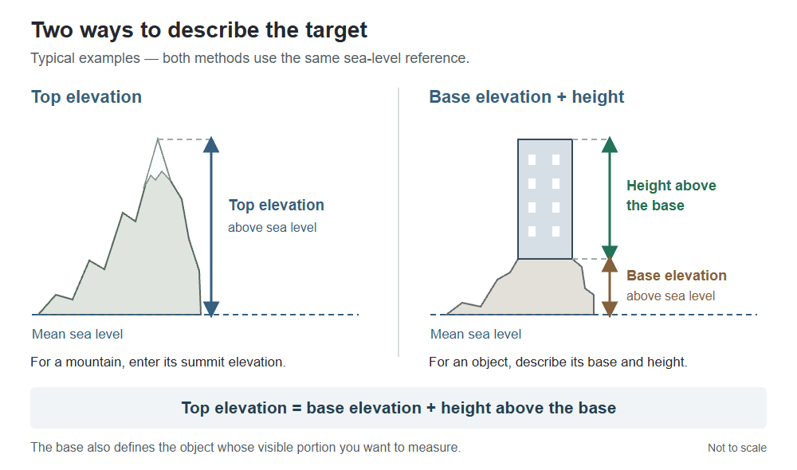
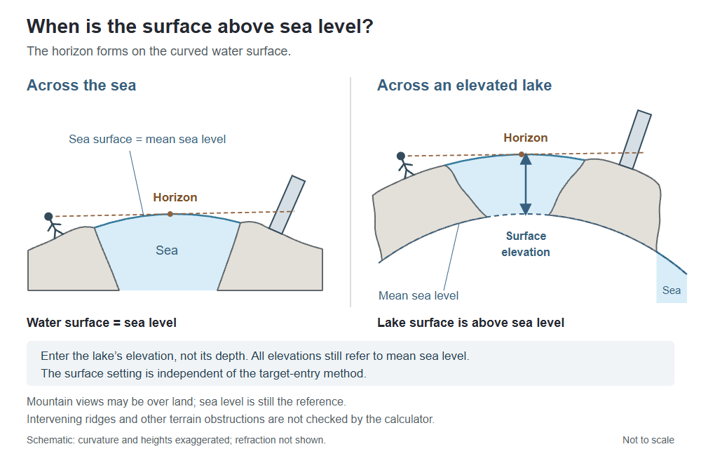

Earth curvature calculator guide
How much is hidden below the horizon?
A distant summit or building can rise above the horizon even when its lower part is hidden by Earth’s curvature. Beyond Horizon Calculator estimates that hidden height, the visible portion, the distance to the horizon and the horizon dip angle.
This guide explains which measurements to enter and what the results mean. You can explore a preset example or use your own values in the calculator.
Start with a simple calculation
- Select My own values and choose metric or imperial units.
- Enter your observer eye elevation above mean sea level. Use the elevation of your eyes or camera, not just the ground beneath you.
- Enter the surface distance to the target—the distance along Earth’s surface, rather than the straight line from your eyes to the target.
- If known, enter the target top elevation. Leave it empty if you only want the horizon and cutoff information.
- Choose a refraction setting and select Calculate visibility.
Alternatively, select an example scenario. Edit these values copies that example into custom entry; My own values keeps your own calculation separate from examples you browse.
Mountain elevation or building height?
For a mountain, you will usually know the summit’s elevation above sea level. Enter that directly as the target top elevation. There is no need to invent a mountain base.
For a building or tower, you may instead know its height and the elevation of the ground it stands on. Select Use base elevation + height instead and enter both measurements.
Top elevation = base elevation + height above the base
The base also defines the physical object whose visible and hidden portions you want to measure. These are alternative ways to describe a target—not compulsory “mountain” and “building” categories.


When does an elevated lake matter?
Across the sea, the water surface is at mean sea level. Across an elevated lake, the water surface is above that reference. Use Change for an elevated lake to enter the water surface’s elevation—not its depth.
The lake’s surface elevation and a building’s base elevation are separate inputs. You can use an elevated surface with either target-entry method. Observer and target elevations still refer to sea level.


Mountain views do not require water. Sea level is also the reference for ordinary mountain examples over land. The calculator does not check intervening ridges, and this setting is not an average terrain elevation.
Worked example: Karagöl area to Shkhara
This uses the rounded distance displayed for the Karagöl–Shkhara example. To reproduce the figures exactly, enter these values in metric mode with top elevation selected and the intervening surface left at sea level.
Inputs
- Observer eye elevation
- 3,035 m AMSL
- Surface distance
- 493.1 km
- Target top elevation
- 5,193 m AMSL
- Refraction factor
- 1.20
Calculated results
- Visible height
- 146.2 m
- Hidden height
- 5,046.8 m
- Horizon distance
- 215.44 km
- Horizon dip angle
- 1.61°
The model places the summit above the horizon line. The visible-height result describes the vertical interval from the calculated cutoff to the summit—not a prediction of which individual slopes will appear in a photograph.
These outputs were checked with the calculator’s calculation engine. They depend on the stated refraction assumption; they do not establish actual atmospheric conditions or prove an unobstructed terrain path.
Try the example in the calculatorWhat do the main results mean?
Visible height and hidden height
For a target described by a base and height, these split the object’s physical vertical extent into the parts above and below the calculated horizon line. With top-elevation entry, the reference base is sea level; for a mountain, do not interpret the hidden-height figure as a measured portion of its terrain.
Horizon distance
This is the model’s straight-line distance from the observer to the horizon tangent point. It differs from the surface distance entered for the target and from the full observer-to-target distance.
Horizon dip angle
The angle between the observer’s local horizontal and the line down to the horizon. Local horizontal is perpendicular to the radius through the observer—not necessarily horizontal on a cross-section drawing.
Open Detailed measurements for the supporting distances and apparent-height measurements. If you have not specified a target top, use the available horizon and cutoff information rather than an object-visibility percentage.
Refraction and the limits of the model
Beyond Horizon Calculator uses a spherical Earth model with a radius of 6,371 km. Its refraction factor multiplies the effective Earth radius: 1.00 means no refraction adjustment. A larger factor models light bending around the Earth by using a larger effective radius.
Do not substitute a refraction coefficient from another calculator without checking its definition: different tools can use different conventions.
- Atmosphere: refraction changes with conditions. A single factor cannot reproduce every temperature layer or mirage.
- Terrain: ridges, trees and buildings between the observer and target are not checked.
- Visibility: cloud, haze, contrast and camera resolution can prevent you seeing a geometrically visible target.
- Input quality: use a consistent elevation reference and the correct observation point. Small input differences can matter near the horizon.
The output is a model estimate, not a guarantee that a photograph or observation is possible. The calculation source code is public.
Common questions
Is Earth curvature drop the same as hidden height?
No. Curvature drop is a geometric departure from a chosen tangent. Hidden height also depends on the observer’s elevation, the target’s distance and the refraction assumption. A simple drop figure alone does not tell you how much of an object you can see.
Can a mountain beyond the horizon still be visible?
Yes. The summit can extend above the horizon line even when lower elevations are hidden. Whether it is visible in practice also depends on intervening terrain and atmospheric conditions.
Should I enter eye height above the ground or above sea level?
Enter eye or camera elevation above mean sea level. If you know the ground elevation and your eye height above it, add them. For an elevated lake, enter the lake surface elevation separately; do not replace the observer elevation with height above the lake.
Does a higher refraction setting prove a long-distance view is possible?
No. It changes the model assumption. A setting that makes a target clear the horizon is not evidence that those atmospheric conditions occurred during an observation.